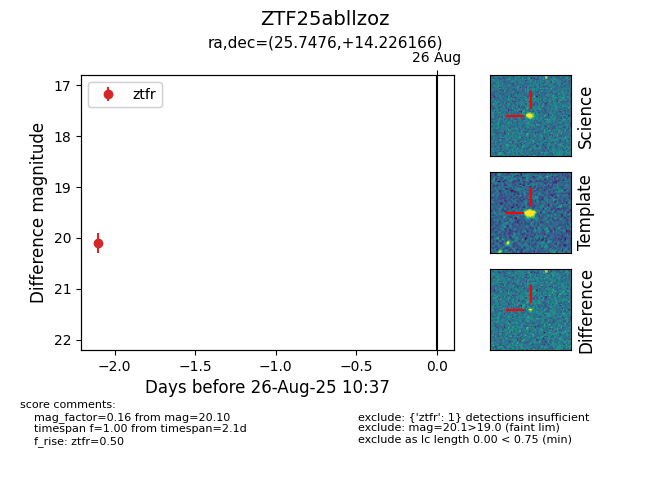

Target ZTF25abllzoz at 2025-08-26 10:37, see:
FINK: fink-portal.org/ZTF25abllzoz
Lasair: lasair-ztf.lsst.ac.uk/objects/ZTF25abllzoz
ALeRCE: alerce.online/object/ZTF25abllzoz
alt names
ZTF25abllzoz (ztf,fink)
coordinates:
equatorial (ra, dec) = (25.7476,+14.22617)
galactic (l, b) = (141.3416,-46.79454)
photometry
last ztfr=20.10
1 ztfr detections
